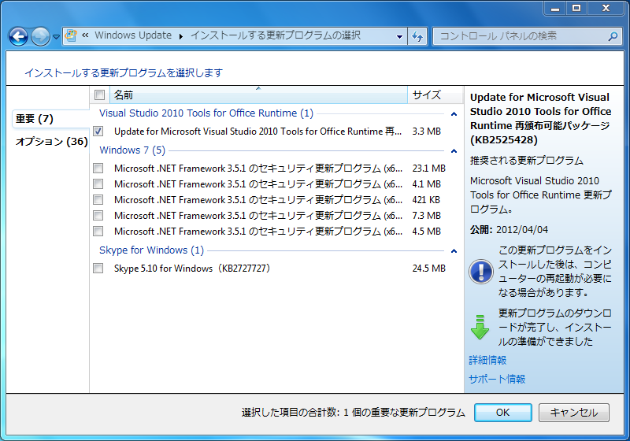

Skype for Windows が Microsoft Update から入手可能に
公開日：

Mac Book Pro をとられた。 - だるろぐ でアップデートかけてて気付いたのだけれど、 Skype for Windows 5.10 が Windows Update（Microsoft Update）から入手できるみたい。まぁ、 Microsoft Security Essential （MSE）*1みたいな感じだね。
この話は木曜日に Twitter で耳にしていたのだけれど、手元の PC では確認ができていなかった*2。いつからそうなのか、実は昔からそうだったのか、自分にはわからない*3。
どうでもいい話なのだけれど、 Skype ってダウンロードするときに ID/Password を入力しなきゃいけないのが個人的には面倒なので（だって、インストール後にまた入力するんだぜ？）、 Windows Update 経由で入手できるのならそっちの方が楽ちんだなと思った。ただ、デフォルトでは自動でインストールされないので、日頃 Windows Update を確認しないヒトは気付かないよね。